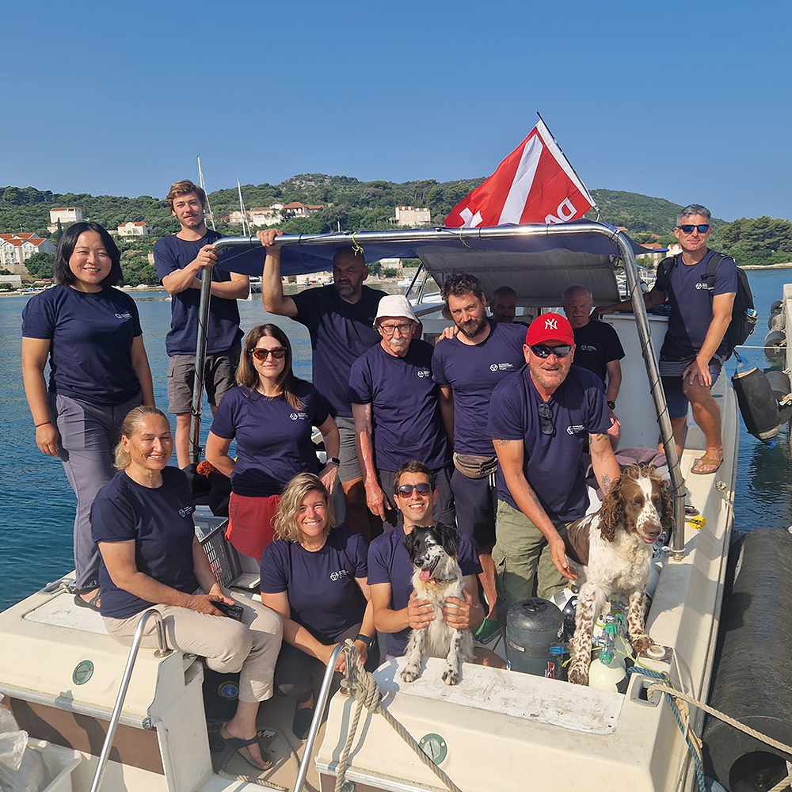
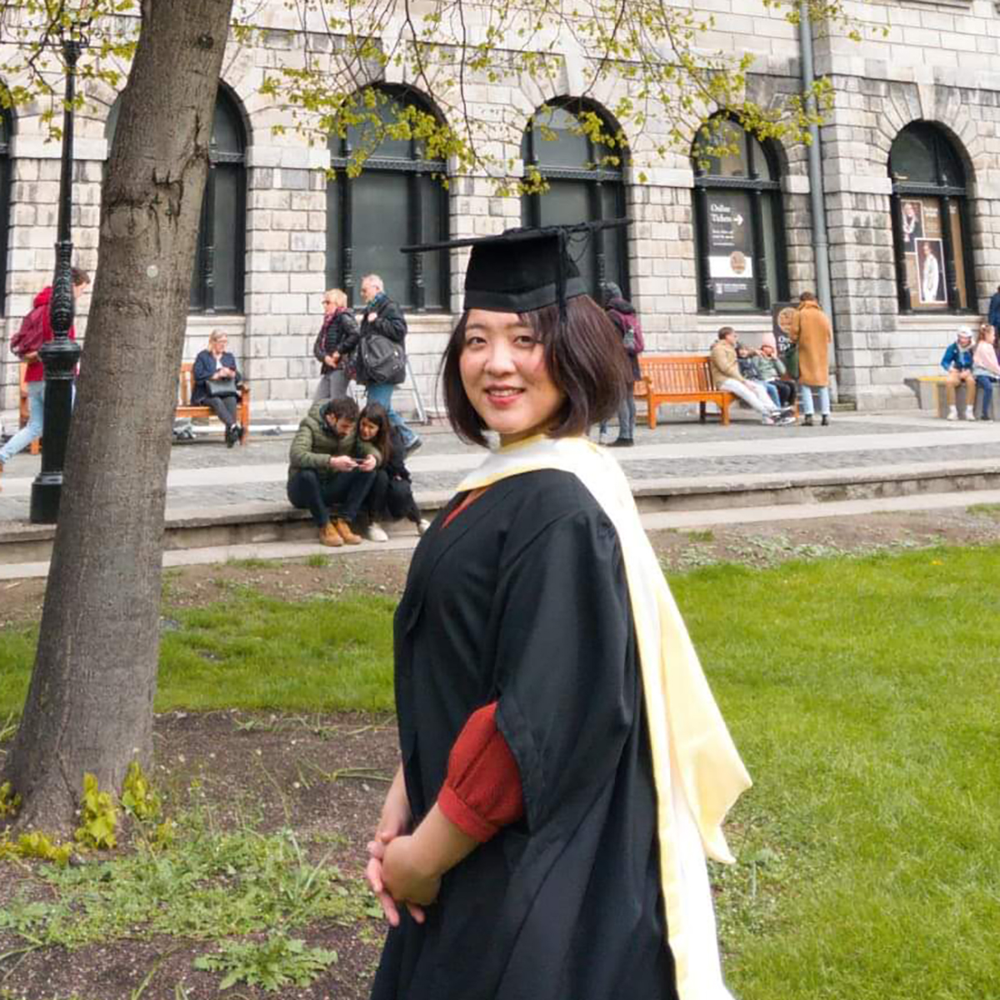
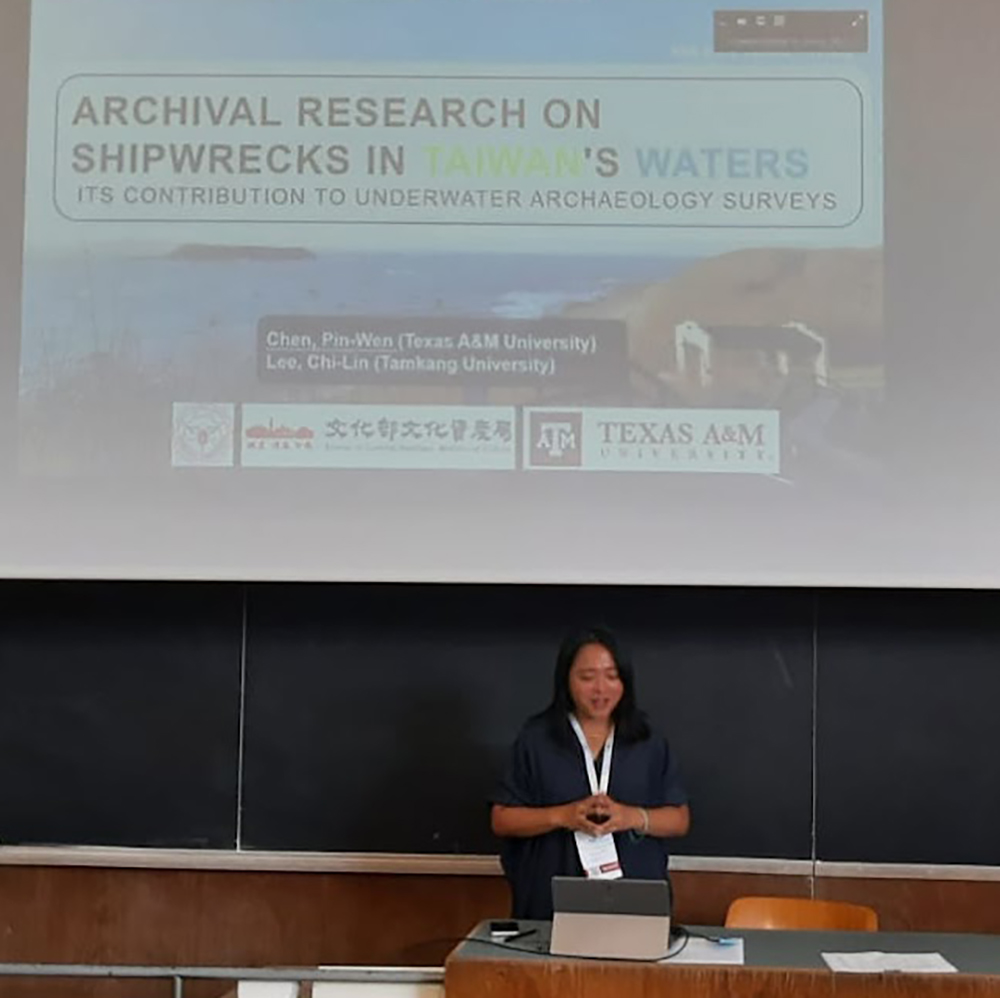
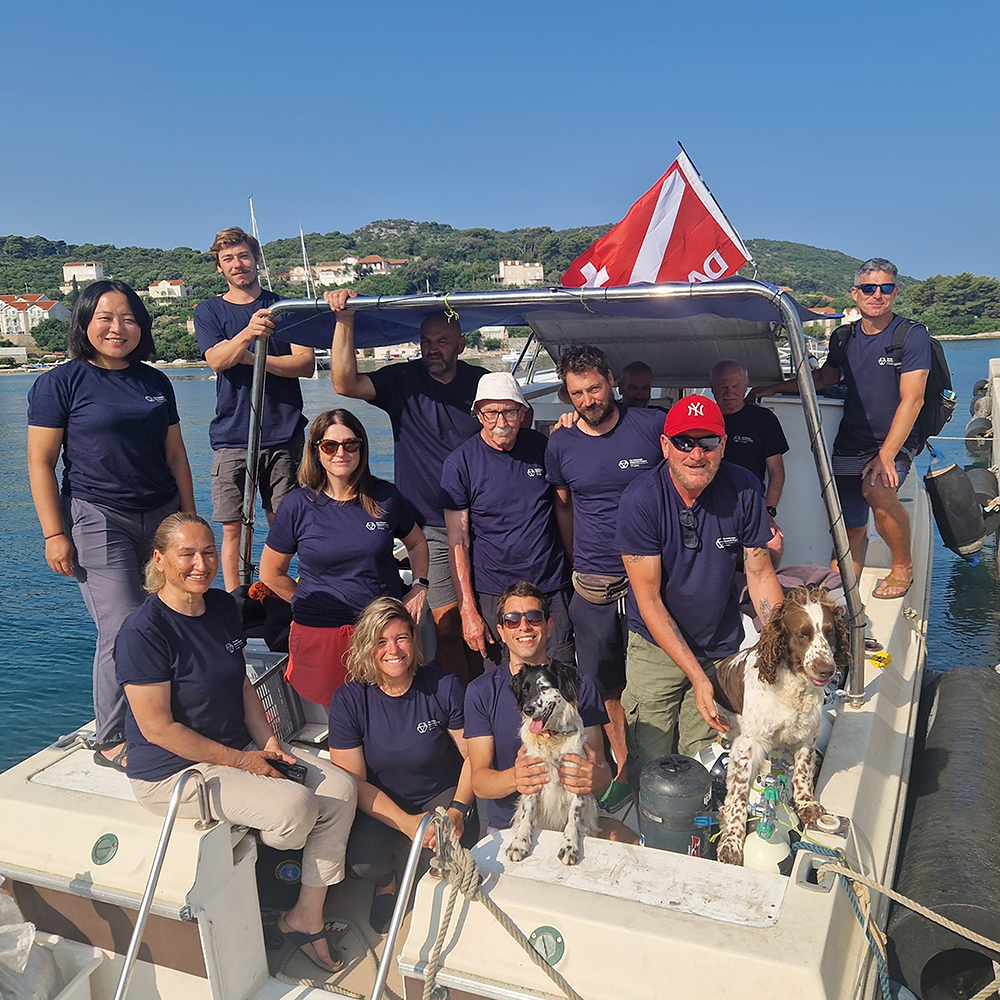
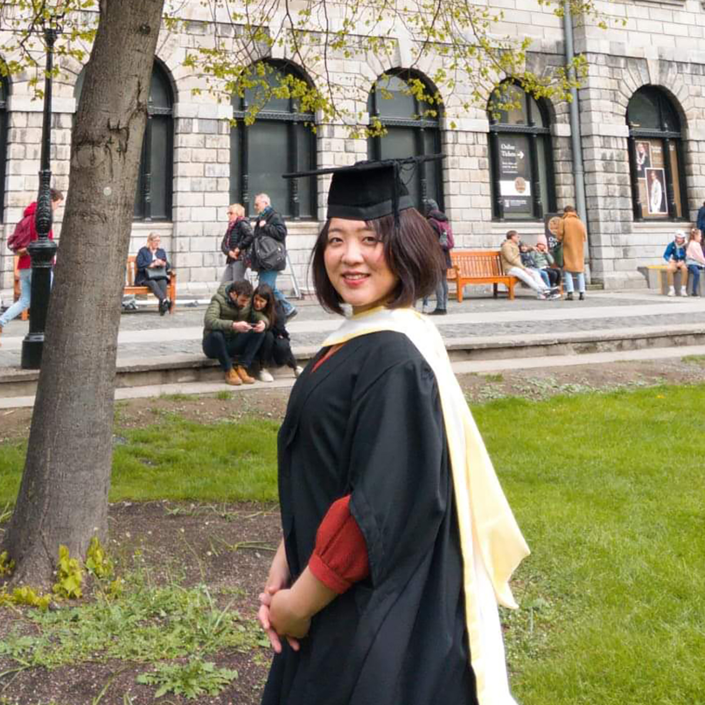
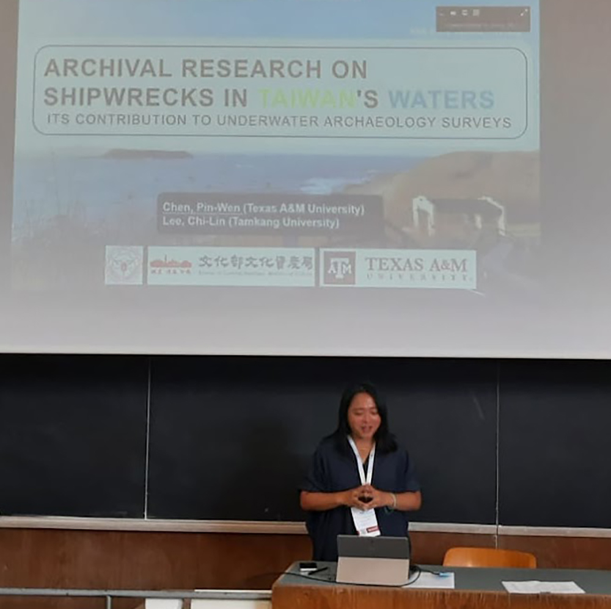

About Me
Welcome to my academic webpage. I am an underwater archaeologist from Taiwan, currently pursuing my PhD at Texas A&M University. I have extensive experience in underwater survey and excavation and look forward to collaborating on diverse projects in the future.
My research focuses on early 20th-century Chinese seagoing ship models in Western museums through digital documentation to understand their collection history and enhance research accessibility. By comparing these models with historical records and archaeological evidence, I aim to advance understanding of shipwreck structures and Chinese shipbuilding traditions, as well as Western nautical study traditions, bridging not just different regions but also museum collections with archaeological research.
Specializations: Underwater Archaeology, Maritime Cultural Heritage Management, Archival Research and Historical Archaeology, Nautical Archaeology and Archaeological Tourism.
Education
Current Research
My doctoral research focuses on the intersection of museum collections of early 20th century Chinese seagoing ship-models. How ship models as carriers of Cultural Translation and Western Perspectives in Scientific Records.
 





Recent Field Projects
- DPAA Survey Project "25-2DK" - Denmark (June-July 2025): WWII archaeological site investigation
- Kalamota Shipwreck Project - Croatia (May-June 2025): Underwater archaeological survey and excavation
- Serçe Limanı Hellenistic Shipwreck - Turkey (June-August 2024): Underwater archaeological survey and excavation
- Aigina Harbour City Project 2019-2023 - Aegina, Greece (June-July 2022; August-Sep. 2019): Underwater archaeological survey and excavation
Professional Experience
Archaeological Artifact Conservation, The Prehistoric World (Archaeology Introduction), Peoples and Cultures of the World (Anthropology Introduction)
Comprehensive archaeological surveys of underwater cultural heritage around Taiwan's waters, Ma-Gong port dredging Cultural Resource Management (CRM) initiative
Led Chong-De Archaeological Site Assessment Project, executed mapping and resurvey operations of prehistoric sites in northeastern New Taipei City
Developed in-situ preservation and monitoring protocols for underwater sites in Taiwan, managed research project creating inventory of 20th-century nautical artifacts
Publications & Presentations
Skills & Certifications
Languages
Mandarin Chinese (Native, including Min-Nan dialect)
English (Fluent)
French (Advanced - DELF B2 certified)
Technical Software
GIS Platforms (ArcGIS, QGIS)
Photogrammetry (Agisoft Metashape)
Drone Operation
Adobe Illustrator, Photoshop
Film editing, Microsoft Office Suite
Diving Certifications
Rescue Diver (SNSI) - 250+ logged dives
Advanced Open Water & Open Water (PADI)
French Scientific Diver (Certificat d'aptitude à l'Hyperbarie classe 0 de la mention B)
Awards & Scholarships
Taiwan Government Sponsorship for Overseas Study (PhD, 2023-2026)
Glasscock Graduate Arrival Fellowship | Texas A&M University (2023)
Advanced Dive Training Grant - Women Divers Hall of Fame (2024)
Joseph Fourier Master Scholarship | French Government (2019-2020)